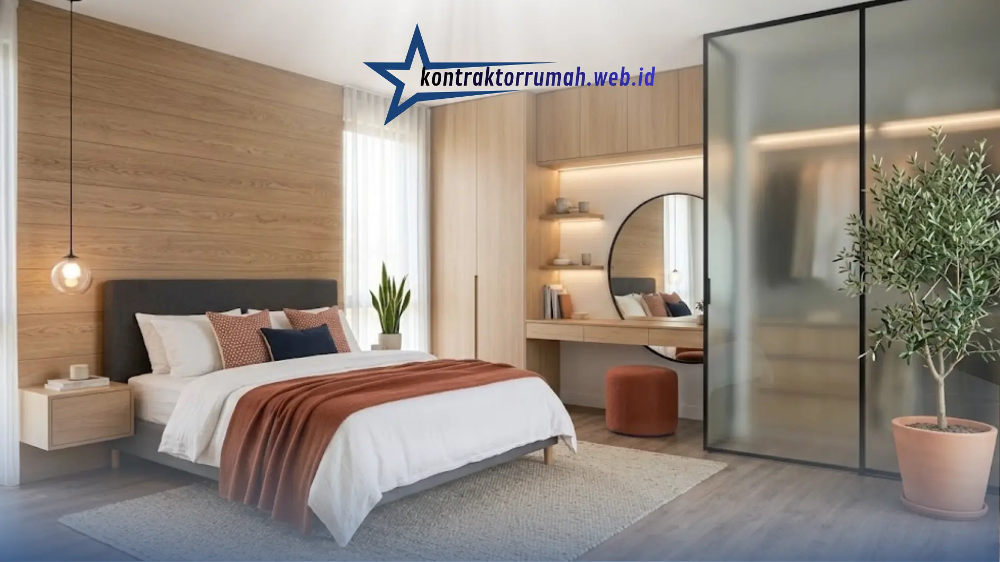

Kamar tidur utama adalah tempat perlindungan pribadi di dalam rumah. Setelah seharian beraktivitas, memiliki ruang istirahat yang nyaman dan menenangkan bukan lagi sekadar pelengkap, melainkan kebutuhan.
Tren desain kamar tidur utama modern kini menjadi pilihan favorit banyak pemilik rumah karena memadukan estetika visual yang menawan dengan fungsionalitas dan efisiensi ruang. Berikut inspirasi dan elemen penting untuk mewujudkan kamar tidur utama bergaya modern di rumah Anda.
Poin Penting
- Gunakan warna netral hangat (putih, abu-abu muda, krem, taupe) lalu tambahkan aksen kontras agar ruangan tidak monoton.
- Pilih furnitur bergaris tegas (clean lines) dengan lemari tanam dan nakas tanpa gagang agar ruangan tetap rapi.
- Terapkan layered lighting: cahaya alami maksimal di siang hari, kombinasi lampu ambient bernuansa warm white di malam hari.
- Tambahkan material alami seperti lantai vinyl motif kayu, panel oak, atau tanaman hias agar kesan modern tidak terasa dingin.
- Manfaatkan storage tersembunyi (under-bed storage, laci built-in, ottoman multifungsi) agar ruang tetap lapang.
Palet Warna Netral yang Menenangkan
Ciri khas kamar tidur modern adalah penggunaan warna netral hangat (earth tones) seperti putih, abu-abu muda, krem, atau taupe yang memberi kesan luas, bersih, dan elegan.
Tambahkan dimensi pada ruangan lewat aksen kontras, misalnya sarung bantal navy, selimut terracotta, atau hiasan dinding kayu gelap.
Furnitur Fungsional dengan Garis Tegas
Pilih furnitur berdesain ramping dengan garis tegas (clean lines) dan hindari ukiran berlebihan. Tempat tidur dengan headboard berlapis kain (upholstered) atau panel kayu minimalis sudah cukup menjadi titik fokus ruangan.
Lemari tanam (built-in wardrobe) dan nakas tanpa gagang (handleless) memperkuat kesan modern sekaligus menjaga ruangan tetap rapi.
Tata Cahaya Berlapis (Layered Lighting)
Desain kamar tidur modern selalu memadukan cahaya alami maksimal di siang hari dan pencahayaan buatan terstruktur di malam hari:
- Siang hari: gunakan jendela besar dengan tirai tipis (vitrase) agar cahaya matahari mudah masuk.
- Malam hari: kombinasikan lampu plafon (general lighting) dengan lampu baca gantung atau lampu meja bernuansa warm white (ambient lighting) agar kamar terasa intim dan rileks.

Perpaduan cahaya alami, pencahayaan berlapis, dan furnitur fungsional menciptakan kamar tidur utama yang nyaman sekaligus estetik.
Sentuhan Material Alami
Agar kesan modern tidak terasa kaku dan dingin, masukkan elemen alam ke ruangan: lantai vinyl motif kayu, panel dinding oak, atau tanaman hias seperti Monstera dan Snake Plant di sudut kamar.
Material alami ini memberi keseimbangan visual sehingga penghuni merasa lebih membumi.
Storage Tersembunyi agar Ruang Tetap Lapang
Kamar tidur modern identik dengan ruang yang bersih dari barang berserakan. Manfaatkan under-bed storage, laci built-in di sisi tempat tidur, atau ottoman multifungsi sebagai tempat duduk sekaligus penyimpanan selimut cadangan.
Dengan memadukan kelima elemen di atas—palet warna netral, furnitur bergaris tegas, tata cahaya berlapis, sentuhan material alami, dan storage tersembunyi—kamar tidur utama Anda bisa tampil modern, nyaman, dan menenangkan sebagai ruang istirahat terbaik di rumah.
FAQ Seputar Desain Kamar Tidur Utama Modern
Butuh bantuan mewujudkan kamar tidur utama impian Anda? Tim jasa desain interior kami siap membantu mulai dari konsep hingga eksekusi lapangan.